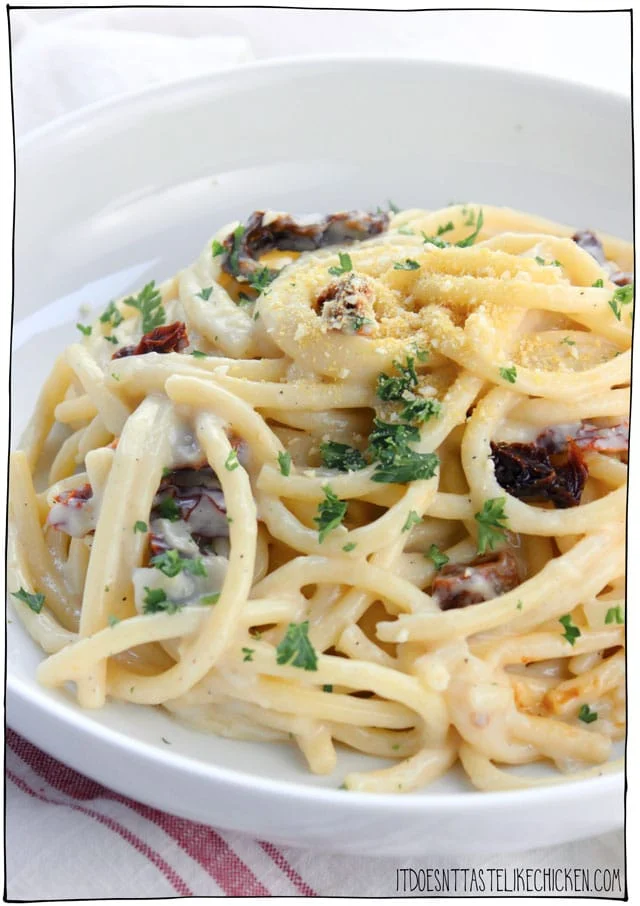

Carbonara Recipe

Description
This 20-minute pasta recipe is so easy to whip together. A simple creamy sauce coats the noodles with chewy,
salty, smoky, bites of sun-dried tomato. Perfect for a busy weeknight meal, made from ingredients you probably
already have in the pantry.
Ingredients
- 1 400 g pasta of choice (spaghetti, fettucini, bucantini, or gluten-free if preferred)
- ½ cup sun-dried tomatoes (the dry kind, not in oil), sliced
- 2 teaspoons soy sauce
- ¼ teaspoon liquid smoke
- 1 tablespoon olive oil
- 1 yellow onion, chopped
- 3 cloves garlic, minced
- ¼ cup all-purpose flour (gluten-free if preferred)
- 2 ½ cups plant-based milk (such as soy or almond)
- 1 tablespoon nutritional yeast
- ¾ teaspoon black salt (also called kala namak), use regular salt if preferred
- ¼ teaspoon black pepper
Steps
- Bring a large pot of water to a boil and cook the pasta according to the package directions.
- Mix together the sun-dried tomatoes, soy sauce, and liquid smoke in a small bowl and set aside to absorb the
flavours while you prepare the rest of the dish.
- Heat the olive oil in a large pan over medium-high heat. When hot add the onions and garlic and sauté until
the onion turns translucent and begins to brown, about 5 minutes. Sprinkle over the flour and stir to coat
the onions, let cook for about 60 seconds, then whisk in all of the remaining ingredients. Cook the sauce
for about 5 minutes until thickened, whisking as needed. If the sauce gets too thick, add a splash more
plant-based milk, and if the sauce is too thin, simply cook it longer.
- Add the cooked pasta and the marinated sun-dried tomatoes to the sauce and toss well to combine. Serve hot.
Garnish with parsley and parmesan if desired.
Notes
Index